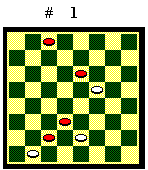
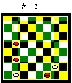
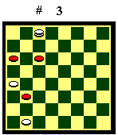
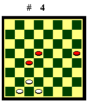
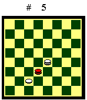
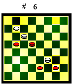
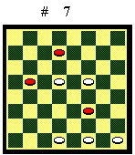

Elementi tattici

Cambio e baratto
Con il cambio si dà un pezzo in presa e si riprende il pezzo avversario che ha effettuato la presa (nel Diagramma 1 in alto la pedina bianca prende e viene ripresa).
Con il baratto si dà (o si
lascia) un pezzo in presa, e si riprende un pezzo avversario diverso da
quello che ha effettuato la presa (nel Diagramma 1 in basso la pedina
nera in 22 prende, ma non è ripresa: il Bianco mangia la pedina
in 26). Cambio e baratto influiscono in modo diverso sull'opposizione,
come è spiegato nell'appendice sui finali teorici.

Attacco
L'attacco è la minaccia di
prendere un pezzo. E' una manovra da effettuare con attenzione perché
poi la presa è obbligata e si concede all'avversario un tempo di
vantaggio. Nel Diagramma 2 il Bianco muove. La dama nera ha attaccato
sconsideratamente la pedina in 28 e il Bianco guadagna un pezzo con 29-25.

Forzatura
La forzatura è un attacco
a cui l'avversario deve rispondere con una mossa obbligata, pena la perdita
del pezzo attaccato. In finale non sono rare forzature multiple. Diagramma
3. Il Bianco move: 1. 2-6 (inizia la serie delle forzature, che permette
al Bianco di guadagnare i tempi necessari per far avanzare la dama fino
al posto giusto) 10-14 2. 6-10 14-19 3.10-14 19-23 4.29-25 (ancora una
forzatura) 21-26 5.17-13 il Bianco guadagna un pezzo e vince.

Mossa di attesa
Mossa che ha il solo scopo di fare
muovere di nuovo l'avversario, generalmente per farlo cadere in una trappola.
Nel Diagramma 4 il Bianco muove 25-29 e il Nero, sia con 14-19 che
con 16-20, perde un pezzo per la risposta 26-22.

Occhiali
Formazione in cui una dama entra
fra due pezzi avversari e ne cattura uno. Diagramma 5. Il Bianco
muove e perde un pezzo.

Forchette
Formazione in cui una dama attacca
contemporaneamente due pedine e ne cattura una (Diagramma 6 in basso).
Se la dama ha l'appoggio di un altro pezzo (amico o avversario) può
attaccare anche una pedina e una dama (Diagramma 6 in alto).

Barriera
Formazione dove tre pedine ne fronteggiano
una avversaria e la catturano. Nel Diagramma 7 in basso il Bianco
cattura la pedina in 23 con 31-27 o 31-28. Uno dei punti esterni della
barriera può anche essere una pedina avversaria o una sponda. Nel
Diagramma 7 in alto il Bianco cattura la pedina in 6 con 14-10.
Indice